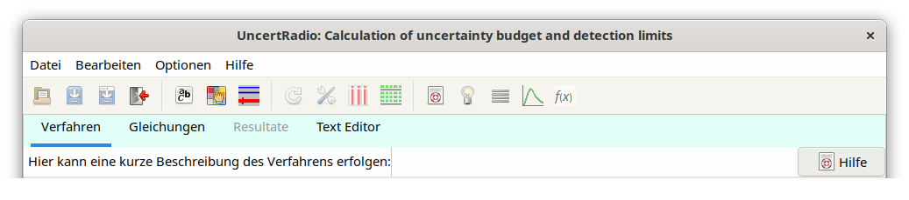
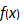

2.2. Das Hauptmenü¶
2.2.1. Menü Datei¶
Nach dem Start des Programms befindet sich das Programm in dem Zustand, dass ein neues Messproblem - im Programm als Projekt bezeichnet - definiert und bearbeitet werden kann. Es sind die TABs „Verfahren“ und „Gleichungen“ zugänglich.
Mit dem Menü-Punkt „Datei – Projekt Laden„ oder dem Icon kann ein bereits als Projektdatei (Extension.txp) vorliegendes Messproblem in das Programm geladen werden, wobei das Programm den gesamten Rechengang automatisch einmal „durchfährt“, bis zum TAB „Resultate“. Dies kann einige Sekunden in Anspruch nehmen, währenddessen ein zusätzlicher Windows-Dialog, der auf diesen Vorgang hinweist, sich erst wieder schließt, wenn das Programm „stehen“ bleibt. Danach kann das Projekt weiterbearbeitet werden.
Falls während des Ladens bei dem automatischen „Durchfahren„ durch die verschiedenen TABs Probleme auftreten, kann das „Durchfahren„ mit dem Menü-Punkt Optionen – Project Load – ohne Berechnungenabgeschaltet werden.
Mit dem Menü-Punkt „Datei - Projekt speichern„ oder dem Icon  kann ein in Bearbeitung befindliches Messproblem als Projektdatei (Extension .txp) unter demselben Dateinamen gesichert oder mit „Datei - Projekt speichern unter„ oder mit
kann ein in Bearbeitung befindliches Messproblem als Projektdatei (Extension .txp) unter demselben Dateinamen gesichert oder mit „Datei - Projekt speichern unter„ oder mit  unter einem neuen Dateinamen gespeichert werden. Mit „Datei - Projekt schließen„ oder mit
unter einem neuen Dateinamen gespeichert werden. Mit „Datei - Projekt schließen„ oder mit  kann die Projektdatei geschlossen werden. Eine Projektdatei kann auch im CSV-Format selektiert und eingelesen oder gespeichert werden.
kann die Projektdatei geschlossen werden. Eine Projektdatei kann auch im CSV-Format selektiert und eingelesen oder gespeichert werden.
2.2.2. Menü Bearbeiten¶
Unter dem Menü-Punkt „Bearbeiten - Report„ wird eine Reportdatei „Report.txt“ erzeugt, die den augenblicklichen Stand der Bearbeitung des Projekts wiedergibt. Sie kann mit dem internen Texteditor unter dem TAB „Text Editor“ angesehen bzw. damit auch unter einem anderen Dateinamen gesichert werden. In der Reportdatei werden die Ergebnisse für alle Ergebnisgrößen nacheinander ausgegeben, jeweils ab dem Unsicherheiten-Budget.
Unter dem Menü-Punkt „Bearbeiten - Selektieren Ergebnisgröße“ kann, falls für das bearbeitete Projekt mehr als eine Ergebnisgröße definiert wurde, eine dieser Ergebnisgrößen ausgewählt werden. Auf diese beziehen sich dann die Berechnungen der Unsicherheiten, des Unsicherheiten-Budgets und von Erkennungs- und Nachweisgrenze.
Hinweis
Wenn die Ergebnisgröße gewechselt wird, bedeutet dies, dass auch die sich auf diese Größe beziehenden Selektionen der Brutto-Zählrate und der Netto-Zählrate anzupassen sind, solange es sich nicht um Auswerteverfahren der linearen Entfaltung handelt. Das Programm wechselt dann zum TAB “Gleichungen” und gibt einen entsprechenden Hinweis im rechten Feld der Statusbar. Handelt es sich jedoch um das Verfahren der linearen Entfaltung, bei dem Brutto- und Nettozählrate nicht selektiert werden müssen, werden alle Schritte der Berechnungen bis zum TAB “Resultate” automatisiert in einem Schritt durchgeführt.
Das Menü „Bearbeiten – Zerfallskurve„ erlaubt das Editieren einzelner Dialoge oder Zwischenergebnisse, sofern die lineare Entfaltung mit dem Aufruf LINFIT(..) in den Gleichungen aktiviert wurde.
Untermenü „Modell der Zerfallskurve„, oder, äquivalent das Icon
 in der Toolbar:
in der Toolbar:Hierüber können Parameter des Modells für die Auswertung geändert werden;
Untermenü „Dateneingabe„, oder, äquivalent das Icon in der Toolbar:
Damit wird der Dialog zum Editieren der Eingabedaten der Abklingkurve aufgerufen
Untermenü „Kurvenfit-Tabelle„, oder, äquivalent das Icon
 in der Toolbar:
in der Toolbar:Hiermit wird das Editorfenster zum Einsehen der Fit-Resultate geöffnet.
Bei hierin erfolgten Änderungen erfolgt nach Schließen dieser Dialoge die erneute Auswertung bis hin zum TAB „Resultate“.
Das Menü „Bearbeiten – Gammaspektrometrie„ erlaubt das Editieren einzelner Dialoge oder Zwischenergebnisse, sofern die lineare Entfaltung mit dem Aufruf Gamspk1(..) in den Gleichungen aktiviert wurde.
Untermenü „Gammalinien“, bzw. das Icon in der Toolbar:
Damit wird der Dialog zum Editieren der Eingabedaten der einzelnen Gammalinien aufgerufen.
Untermenü Mittlere Linien-Aktivität bzw. das Icon
in der Toolbar:Hiermit wird das Editorfenster zum Einsehen der Resultate für den gewichteten Mittelwert geöffnet.
Bei hierin erfolgten Änderungen erfolgt nach Schließen dieser Dialoge die erneute Auswertung bis hin zum TAB „Resultate“.
Der Menü-Punkt „Bearbeiten – Kalibrierkurve„ ruft einen Dialog auf, der dazu dient, die Daten einer Kalibrierkurve einzugeben, daran ein Polynom anzupassen und daraus für einen bestimmten Kalibierpunkt den dazugehörigen Wert mit Unsicherheit in UR weiter zu verwenden.
Der Menü-Punkt „Bearbeiten – Ändern des Symbolnamens“ erlaubt es mit Hilfe eines Dialogs den Namen eines darin selektierten Symbols zu ändern. Diese Änderung wird in alle betroffenen Dialoge und Programm-interne Felder übertragen. Falls man den Namen eines Symbols ändern möchte, sollte man diesen nicht in den Gleichungen direkt ändern, sondern diesen Menü-Punkt dafür verwenden.
Der neue Menüpunkt „Bearbeiten – Serielle Auswertung“ wurde eingeführt, der die mehrfache Auswertung eines Projekts mit partiell geänderten Eingangsgrößenwerten/-unsicherheiten erlaubt. Zur Beschreibung wird auf Abschnitt 3.6 verwiesen.
The four parameters of the case of a binomial+Poisson distributed count number can be edited or re-edited using the dialog which is loaded under the menu item „Edit – Set binomial/poisson case„.
Under the menu item „Edit – test physical units„ the consistency of the physical units of the quantities can be checked by an numerical algorithm. This test is described in detail in Abschnitt 5.21.
If a project makes use of calculating the time dependent behaviour of a radioactive decay chain with two or more member, the menu item „Edit – Edit decay chain„ allows to select a decay chain from a file with few pre-defined decay chains and to edit some other measurement-related conditions. A detailed description is given in Abschnitt 4.14.
It may happen that, due to an error having occurred, the project can no longer be opened, it requires to be set up again. Instead of a completely new input of all the values and uncertainties of input quantities, it would then be helpful to take such values from the defect file variant of the project, if these still exist. This step is supported by using the menu item „Edit – Load missing values from project variant„. This requires only the input of the filename of the project variant. Values and uncertainties still existing in the project variant are transferred into the actually opened project for symbols with equal names.
2.2.4. Weitere relevante Icons¶
Unter den restlichen Icons in der Toolbar sind die Wichtigsten:
das „Aktualisieren-Icon“
 , mit dem z. B. nach Änderungen an Eingabedaten oder in anderen Dialogen die Berechnungen vom TAB „Werte, Unsicherheiten“ bis hin zum TAB „Resultate“ automatisch durchgeführt werden;
, mit dem z. B. nach Änderungen an Eingabedaten oder in anderen Dialogen die Berechnungen vom TAB „Werte, Unsicherheiten“ bis hin zum TAB „Resultate“ automatisch durchgeführt werden;das „Zeilen löschen Icon“
 , das es gestattet, in den Grids „Tabelle der Symbole“ und „Tabelle der Zerfallskurve“ – sowie in anderen Dialogen – solche Zeilen zu löschen, die zuvor mit der Maus markiert wurden;
, das es gestattet, in den Grids „Tabelle der Symbole“ und „Tabelle der Zerfallskurve“ – sowie in anderen Dialogen – solche Zeilen zu löschen, die zuvor mit der Maus markiert wurden;
dazu kann auch ein Zeilen-Block markiert werden:
mit der Maus in die obere Zeile klicken, dann Shift-Taste drücken und festhalten und dann mit der Maus in die unterste Zeile klicken;
mit dem Icon
 kann die Hilfe aufgerufen werden;
kann die Hilfe aufgerufen werden;mit dem Icon kann in der Hilfe eine Seite mit Ratschlägen bei Problemen aufgerufen werden;
das „Fontname-Icon“
 erlaubt die Änderung des Schrifttyps und der Schriftgröße
erlaubt die Änderung des Schrifttyps und der Schriftgrößedas „Mittelwert-Icon“
 öffnet einen Dialog für die Eingabe von Einzelwerten einer Variablen, die Selektion solcher Variablen und des Mittelwerttyps.
öffnet einen Dialog für die Eingabe von Einzelwerten einer Variablen, die Selektion solcher Variablen und des Mittelwerttyps.Mit dem Icon
 kann ein Dialog zur Ansicht der Parameter einer speziellen Verteilungsdichte einer Eingangsgröße aufgerufen werden. Dazu muss die Zeile dieser Eingangsgröße in der „Werte, Unsicherheiten“-Tabelle markiert sein.
kann ein Dialog zur Ansicht der Parameter einer speziellen Verteilungsdichte einer Eingangsgröße aufgerufen werden. Dazu muss die Zeile dieser Eingangsgröße in der „Werte, Unsicherheiten“-Tabelle markiert sein.Mit dem Icon  können kurze Informationen über spezielle UR-Funktionen abgerufen werden.
Tipp
Benutzerführung erfolgt in der Statusleiste am unteren Ende des UncertRadio-Fensters, im rechten Feld. Wenn das Projekt in einigen Details geändert wurde, wird dies in dem Feld links davon angezeigt („unsaved“).
Zum Bearbeiten von Tabellen: siehe managing rows and column blocks within tables
Dem Programm ist eine ganze Reihe von Rechenbeispielen als Projektdateien beigefügt. Zum Einstieg in das Programm wird empfohlen, eins davon mit dem Programm zu öffnen und Abschnitt 2.3 zu folgen.